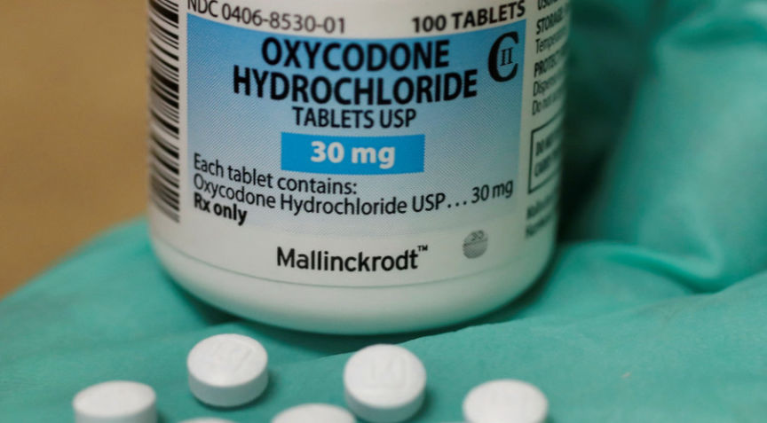
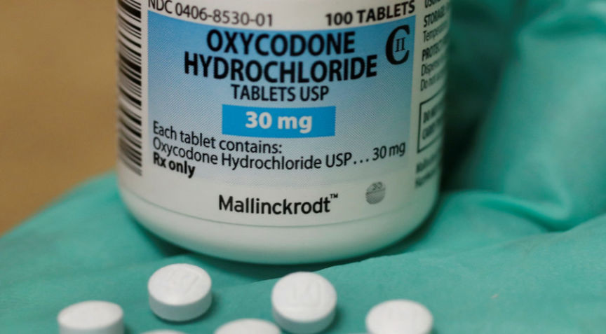

First Suspect in OxyGod Case Gets 90 Months in Prison
~3 min read | Published on 2019-05-31, tagged Darkweb-Vendor, Sentenced using 694 words.
One of the three men accused of operating the darkweb vendor account “OxyGod” was recently sentenced to more than seven years in federal prison. At an earlier hearing, the defendant pleaded guilty to a single count of conspiracy to distribute a controlled substance. Namely counterfeit Oxycodone pills laced with cyclopropyl fentanyl.
Court documents revealed that Duc Cao, 20, admitted working with Isaiah Suarez of Newport Beach and Wyatt Pasekto distribute counterfeit 30mg Oxycodone pills through a number of darkweb marketplaces under the username “OxyGod.” An Orange County judge, on May 30, sentenced Cao to seven years and three months in federal prison. The other defendants are scheduled for sentencing hearings in June and in August.
U.S. Drug Enforcement Administration Special Agent Lindsey Bellomy, the Special Agent who filed the criminal complaint, wrote that all three men pressed the counterfeit pills in a house owned by Suarez on East Balboa Boulevard in Newport Beach. Cao was frequently spotted as he drove to and from the Suarez house and USPS mail collection boxes through Orange, California.
Wyatt Pasek Flexing on Facebook
Some excerpts from court Documents concerning Cao’s involvement:
At approximately 3:30 p.m., Detective Hermes and other CMPD detectives established surveillance at 705 E. Balboa Boulevard, Unit B and observed CAO exit the location carrying a white plastic grocery bag in his hand. Detective Hermes observed CAO walk to the USPS Blue Collection Box located near the 700 block of Balboa Boulevard. There, Detective Hermes saw CAO remove several small USPS Priority Mail parcels from a white plastic bag and place them in the mail receptacle. CAO then returned to Unit B at 705 E. Balboa Boulevard. After CAO left the mailbox, Detective Hermes stayed near the Blue Collection Box and prohibited any further mail pieces to be placed in the receptacle.
Detective Hermes contacted United States Postal Inspector (“USPI”) Jacob Boyd to get access to the contents of the Blue Collection Box. Upon opening the mail receptacle, Detective Hermes observed the seven parcels on top. The parcels all were the same size and shape with the same sender listed on each respective parcel. Detective Hermes took the parcels into custody and then subsequently gave them to USPI Boyd.

Additionally, USPI Boyd found that the parcels were mailed from a postal facility other than the zip code of the sender’s residence. I know from USPI Boyd that drug traffickers will often mail from postal facilities other than those which are located in the irrespective zip code of residence to further disguise themselves as being associated with the parcel.d. Using a public information database, USPI Boyd could not find anyone with the name listed on the parcel associated with the address listed for the sender on the parcels.e. Furthermore, the sender used the USPS"easypost" system to generate labels for the parcels.“Easypost” is a system that allows individuals to print out postage for packages from any computer terminal with a printer, eliminating the need to go into a US Post Office.
Important Note About Law Enforcement’s Knowledge of Vendor Shipping Techniques
USPI Boyd informed me that he learned from the numerous investigations that he has conducted over the course of the last few years that drug traffickers are now regularly using “easypost” in yet another effort to further disguise themselves as being associated with their parcels.
On March 8, 2018, USPI Boyd obtained a warrant to search the contents of the seven parcels. Detective Hermesi nformed me of his meeting with USPI Boyd and relayed to me the following information regarding the search of the seven parcels:a. Parcel #1 was being shipped to an individual in Huntsville, AL, and contained a silver zip lock type baggie. The silver baggie contained a clear plastic ziplock type baggie. The clear baggie had the number “100"written on the outside with a black marker and appeared to contain approximately that number of small blue circular pills with “A/215” imprinted on them.
Suarez also pleaded guilty to a single count of distribution of controlled substances. Pasek, the so-called “ringleader,” pleaded guilty to one count of conspiracy to distribute a controlled substance, one count of being a felon in possession of a firearm and one count of money laundering.
Court documents revealed that Duc Cao, 20, admitted working with Isaiah Suarez of Newport Beach and Wyatt Pasekto distribute counterfeit 30mg Oxycodone pills through a number of darkweb marketplaces under the username “OxyGod.” An Orange County judge, on May 30, sentenced Cao to seven years and three months in federal prison. The other defendants are scheduled for sentencing hearings in June and in August.
OxyGod Offers on Dream Market
U.S. Drug Enforcement Administration Special Agent Lindsey Bellomy, the Special Agent who filed the criminal complaint, wrote that all three men pressed the counterfeit pills in a house owned by Suarez on East Balboa Boulevard in Newport Beach. Cao was frequently spotted as he drove to and from the Suarez house and USPS mail collection boxes through Orange, California.
Wyatt Pasek Flexing on Facebook
Some excerpts from court Documents concerning Cao’s involvement:
At approximately 3:30 p.m., Detective Hermes and other CMPD detectives established surveillance at 705 E. Balboa Boulevard, Unit B and observed CAO exit the location carrying a white plastic grocery bag in his hand. Detective Hermes observed CAO walk to the USPS Blue Collection Box located near the 700 block of Balboa Boulevard. There, Detective Hermes saw CAO remove several small USPS Priority Mail parcels from a white plastic bag and place them in the mail receptacle. CAO then returned to Unit B at 705 E. Balboa Boulevard. After CAO left the mailbox, Detective Hermes stayed near the Blue Collection Box and prohibited any further mail pieces to be placed in the receptacle.
Detective Hermes contacted United States Postal Inspector (“USPI”) Jacob Boyd to get access to the contents of the Blue Collection Box. Upon opening the mail receptacle, Detective Hermes observed the seven parcels on top. The parcels all were the same size and shape with the same sender listed on each respective parcel. Detective Hermes took the parcels into custody and then subsequently gave them to USPI Boyd.

Counterfeit Oxycodone Pills
Additionally, USPI Boyd found that the parcels were mailed from a postal facility other than the zip code of the sender’s residence. I know from USPI Boyd that drug traffickers will often mail from postal facilities other than those which are located in the irrespective zip code of residence to further disguise themselves as being associated with the parcel.d. Using a public information database, USPI Boyd could not find anyone with the name listed on the parcel associated with the address listed for the sender on the parcels.e. Furthermore, the sender used the USPS"easypost" system to generate labels for the parcels.“Easypost” is a system that allows individuals to print out postage for packages from any computer terminal with a printer, eliminating the need to go into a US Post Office.
Important Note About Law Enforcement’s Knowledge of Vendor Shipping Techniques
USPI Boyd informed me that he learned from the numerous investigations that he has conducted over the course of the last few years that drug traffickers are now regularly using “easypost” in yet another effort to further disguise themselves as being associated with their parcels.
On March 8, 2018, USPI Boyd obtained a warrant to search the contents of the seven parcels. Detective Hermesi nformed me of his meeting with USPI Boyd and relayed to me the following information regarding the search of the seven parcels:a. Parcel #1 was being shipped to an individual in Huntsville, AL, and contained a silver zip lock type baggie. The silver baggie contained a clear plastic ziplock type baggie. The clear baggie had the number “100"written on the outside with a black marker and appeared to contain approximately that number of small blue circular pills with “A/215” imprinted on them.
Suarez also pleaded guilty to a single count of distribution of controlled substances. Pasek, the so-called “ringleader,” pleaded guilty to one count of conspiracy to distribute a controlled substance, one count of being a felon in possession of a firearm and one count of money laundering.